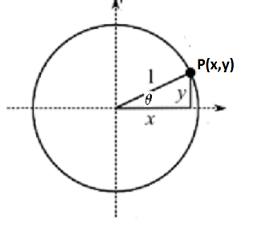
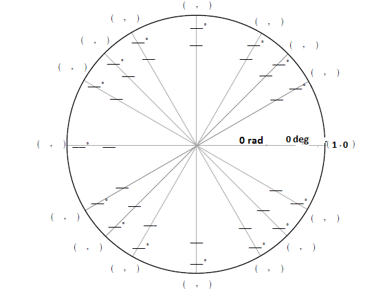

- (a)
- Suppose we’re given the right triangle below. Express \(\sin (\theta )\) and \(\cos (\theta )\) in terms of
the sides of the triangle.
- (b)
- Suppose we are given the triangle below.
- (i)
- Find the length of the sides A and B.
- (ii)
- Express \(\sin \left (\frac {\pi }{4}\right )\) and \(\cos \left (\frac {\pi }{4}\right )\) in terms of the sides of the triangle.
- (c)
- Suppose we are given the triangle below.
- (i)
- Find the length of the sides A and B.
- (ii)
- Express \(\sin \left (\frac {\pi }{3}\right )\) and \(\cos \left (\frac {\pi }{3}\right )\) in terms of the sides of the triangle.
- (d)
- Suppose we are given the triangle below.
- (i)
- Find the length of the sides A and B.
- (ii)
- Write \(\sin \left (\frac {\pi }{6}\right )\) and \(\cos \left (\frac {\pi }{6}\right )\) in terms of the sides of the triangle.
- (e)
- For any point P(x,y) on the unit circle, we can express its coordinates in terms
of \(\sin (\theta )\) and \(\cos (\theta )\). Here \(\theta \) is the radian measure of the angle in standard position
whose terminal side is the line through the origin and the point \(P(x,y)\).

- (f)
- Use all of the above information to label the given points on the unit circle.
That is, for each point on the unit circle, provide the angle measure in
radians and degrees, and give the (x,y) coordinate for the point.
